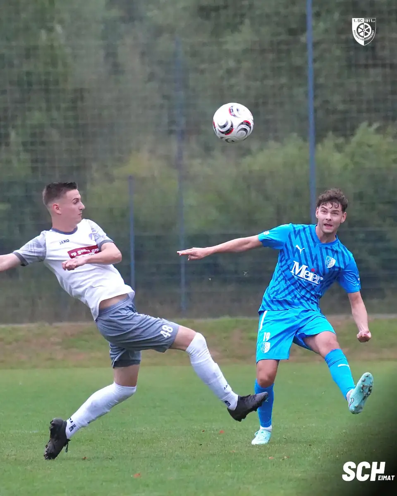
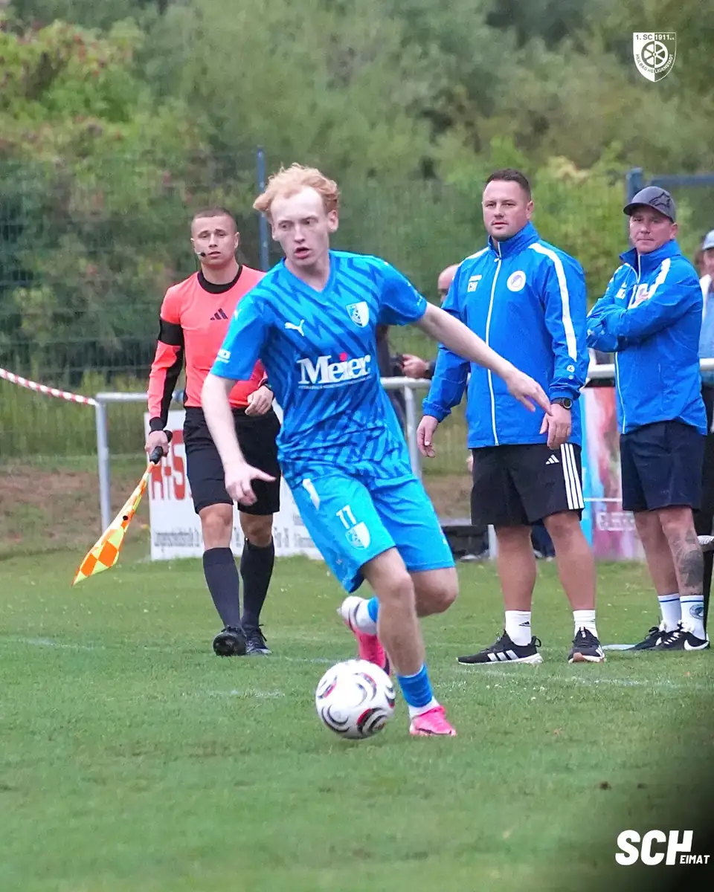
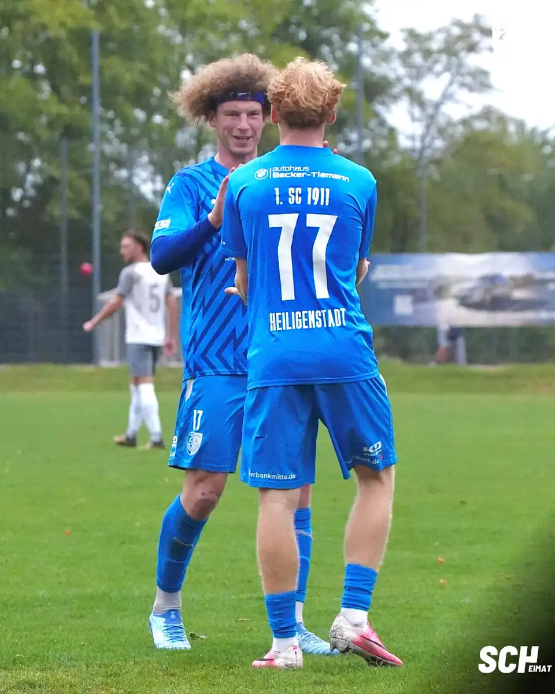
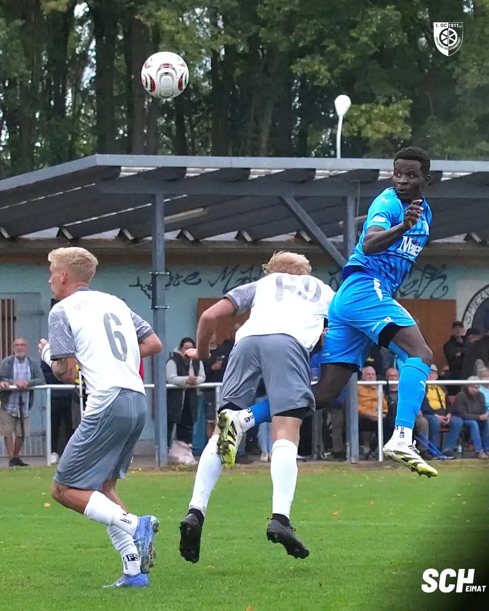
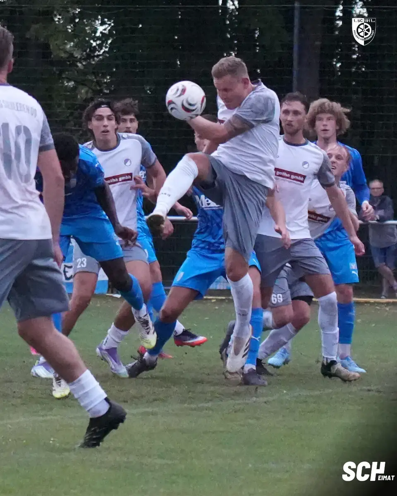
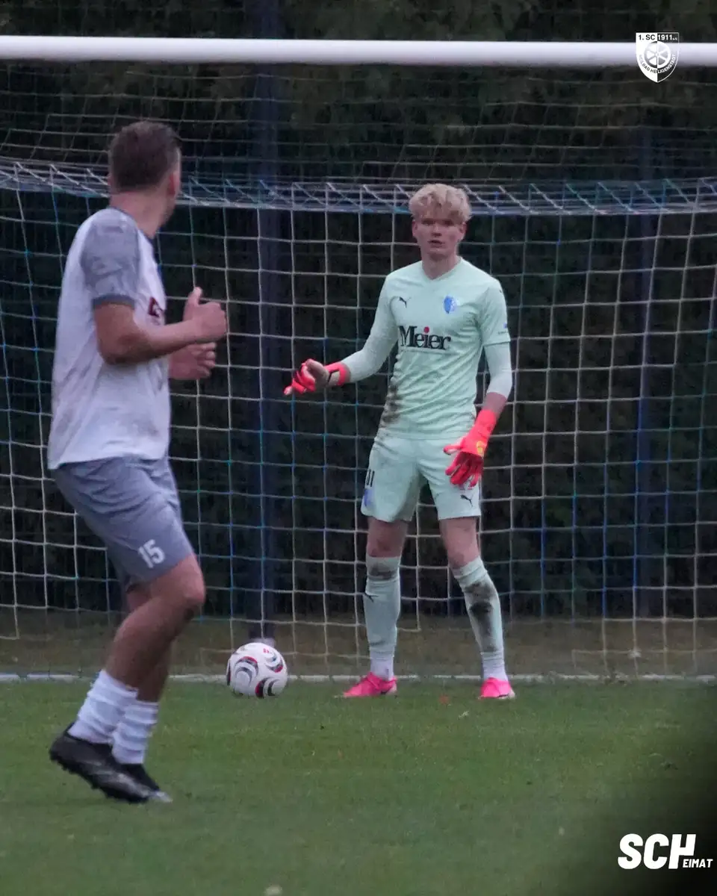
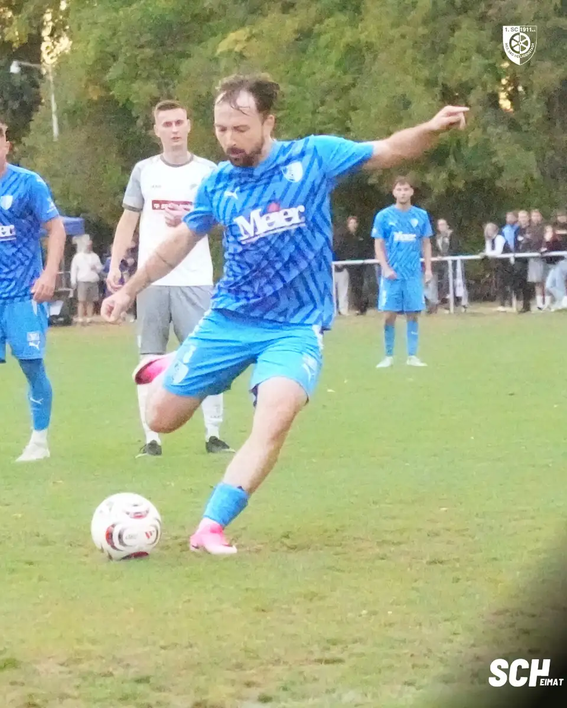
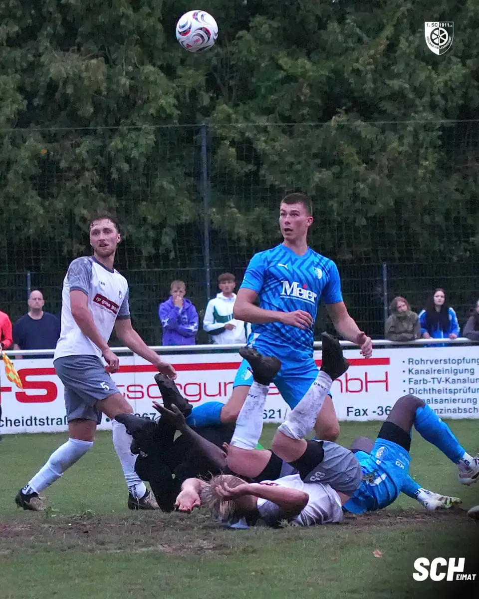
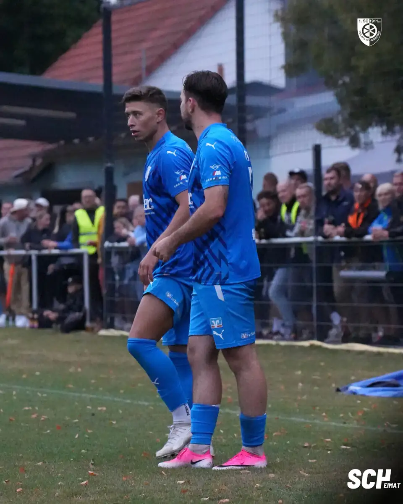
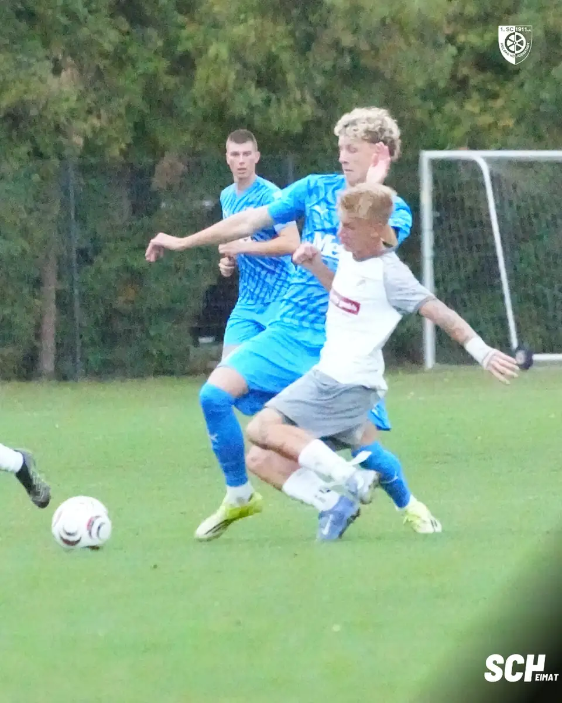

Erst souverän, dann plötzlich eng: SCH zieht nach 5:2 in Siebleben weiter
Der erste Schritt im Thüringer Landespokal ist gemacht. Unsere Mannschaft hat sich am Freitagabend mit 5:2 (3:0) bei der SpVgg Siebleben 06 durchgesetzt und damit das Ticket für die zweite Runde gelöst. Was nach einer souveränen ersten Halbzeit bereits früh entschieden schien, wurde nach dem Seitenwechsel noch einmal deutlich unangenehmer. Der Landesklassist verkürzte innerhalb weniger Minuten auf 2:3 und brachte damit noch einmal Spannung in die Partie. Erst in der Schlussphase sorgte die Ludwig-Elf für klare Verhältnisse und ein letztlich standesgemäßes Ergebnis.
Schnellhardt bringt den SCH auf Kurs
Die Rollen waren vor dem Anpfiff klar verteilt. Auf der einen Seite der Landesklassist aus Siebleben, auf der anderen unsere Verbandsligamannschaft, die nach dem 3:1-Auswärtssieg in Bad Berka mit einem Erfolgserlebnis im Rücken nach Gotha gereist war. Dass Pokalspiele trotzdem ihre eigenen Geschichten schreiben können, sollte sich an diesem Abend noch zeigen.
Zunächst lief allerdings vieles nach Plan. Die Blau-Weißen bestimmten die Partie und gingen nach 16 Minuten verdient in Führung. Fabian Schnellhardt erzielte das 1:0 und brachte damit früh Ruhe in das Spiel unserer Mannschaft. Siebleben, das in der vergangenen Saison den Klassenerhalt in der Landesklasse erst in der Schlussphase der Spielzeit perfekt gemacht hatte, hielt dagegen, konnte den SCH im ersten Durchgang aber nicht entscheidend aus dem Rhythmus bringen.
Zwei Treffer kurz vor der Pause
Lange blieb es beim knappen 1:0. Gerade in einem Pokalspiel ist ein solcher Spielstand immer mit einer gewissen Gefahr verbunden. Ein Moment kann reichen, um eine Partie wieder in eine völlig andere Richtung zu lenken. Genau das ließ unsere Mannschaft kurz vor der Pause aber nicht zu. In der 41. Minute erhöhte Martin Fiedler auf 2:0. Nur drei Minuten später schlug der SCH erneut zu. Kapitän Fabian Schnellhardt war es, der den Ball im Siebleber Tor unterbrachte und mit seinem zweiten Treffer auf 3:0 stellte. Damit schien die Partie unmittelbar vor dem Seitenwechsel bereits deutlich in Richtung unserer Mannschaft gekippt zu sein. Drei Tore Vorsprung, das Spiel weitgehend unter Kontrolle – die Ausgangslage zur Pause hätte kaum besser sein können.
Siebleben meldet sich eindrucksvoll zurück
Doch nach dem Seitenwechsel änderte sich die Geschichte dieses Pokalabends. Siebleben kam zurück. Und plötzlich wurde aus einer bis dahin deutlichen Angelegenheit ein hartes Stück Arbeit. Nur sieben Minuten nach Wiederanpfiff erzielte Andreas Jewtschuk das 1:3. Der Treffer gab den Hausherren spürbar neuen Mut. Was zur Pause noch nach einer komfortablen Führung ausgesehen hatte, war wenige Minuten später wieder ein echtes Pokalspiel. In der 59. Minute bekam Siebleben einen Strafstoß zugesprochen. Michele Lehmann verwandelte und verkürzte auf 2:3. Innerhalb von sieben Minuten war der Drei-Tore-Vorsprung auf einen Treffer zusammengeschmolzen.
Aus einem ruhigen Abend wird harte Arbeit
Genau diese Phase machte deutlich, warum solche Spiele nie vorzeitig abgehakt werden dürfen. Die Gastgeber hatten nichts mehr zu verlieren und waren nach den beiden Treffern wieder mittendrin. Unsere Mannschaft musste sich dagegen neu sammeln.
Die beiden Gegentore waren aus SCH-Sicht unnötig. Statt die Partie mit der 3:0-Führung ruhig herunterzuspielen, musste die Ludwig-Elf plötzlich wieder um den Einzug in die nächste Runde arbeiten. Es war nun weniger souverän als noch vor der Pause. Siebleben glaubte wieder an seine Chance, während die Blau-Weißen einen Weg finden mussten, dem Spiel erneut die gewünschte Richtung zu geben.
Dass die Gastgeber diese Phase nicht einfach herschenkten, kam dabei keineswegs überraschend. Bereits im Qualifikationsspiel in Walldorf hatte die SpVgg Moral bewiesen: Dort geriet Siebleben zwischenzeitlich mit 1:2 in Rückstand und drehte die Partie anschließend noch.
Wolanski sorgt für die Erlösung
Die Minuten verstrichen, die knappe Führung hielt. Eine endgültige Entscheidung fehlte aber weiterhin. Erst acht Minuten vor dem Ende konnte unsere Mannschaft wieder durchatmen. Nach einem Strafstoß bot sich Maciej Wolanski die Möglichkeit zum 4:2. Der Angreifer blieb ruhig und verwandelte in der 82. Minute. Der Zwei-Tore-Abstand war wiederhergestellt – und damit war der Widerstand der Gastgeber schließlich gebrochen. Für die Ludwig-Elf war dieser Treffer die Erlösung nach einer zweiten Halbzeit, die deutlich mehr Kraft gekostet hatte, als es nach dem Pausenstand zu erwarten gewesen war. Den Schlusspunkt setzte schließlich Ole Hoch. Tief in der Nachspielzeit traf der Rückkehrer in der 90.+6 Minute zum 5:2 und stellte damit den Endstand her. So stand nach 90 intensiven Pokalminuten doch noch das Ergebnis auf der Anzeigetafel, das den Unterschied zwischen Landesklasse und Verbandsliga widerspiegelte.
Weiter – aber mit einer kleinen Warnung
Unter dem Strich steht das, was im Pokal zählt: der Einzug in die nächste Runde. Fünf Auswärtstore, zwei Treffer von Fabian Schnellhardt und drei weitere Torschützen zeigen zudem, dass sich die Verantwortung in der Offensive auf mehrere Schultern verteilt. Trotzdem wird die zweite Halbzeit Gesprächsstoff liefern. Nach einer 3:0-Pausenführung darf eine Partie nicht innerhalb von sieben Minuten wieder derart offen werden. Die beiden Gegentreffer machten einen Abend unnötig kompliziert, den der SCH zuvor souverän gestaltet hatte. Gleichzeitig zeigte die Mannschaft eine Reaktion. Sie verlor nach dem 2:3 nicht völlig den Zugriff, überstand die unangenehme Phase und machte das Weiterkommen mit den Treffern von Maciej Wolanski und Ole Hoch endgültig fest. Vor 207 Zuschauern war es damit genau das Pokalspiel, das nach 45 Minuten eigentlich niemand mehr erwartet hatte: erst souverän, dann plötzlich eng – und zum Schluss doch deutlich.
Zurück in den Ligaalltag
Nach dem erfolgreichen Pokalabend richtet sich der Blick wieder auf die Verbandsliga. Am kommenden Samstag, 29. August, steht das nächste Heimspiel im Gesundbrunnen auf dem Programm. Um 14:00 Uhr empfängt die Ludwig-Elf am 4. Spieltag den FC An der Fahner Höhe.
Dann soll an die guten Phasen der vergangenen Spiele angeknüpft werden – und das möglichst über die gesamten 90 Minuten.
Spieldaten
SpVgg Siebleben 06 – 1. SC 1911 Heiligenstadt 2:5 (0:3)
SpVgg Siebleben 06
Kirchner – Votava (54. Gattinger) – Schreiber – Jewtschuk – Seyfarth – Lehmann – Franz (84. Abendroth) – Rümpler – Strießbaum – Fröbe (85. Bayer) – Arlt (79. Hüneke)
SC Heiligenstadt
Fröhlich – Wolanski (90. Jargees Ali) – Abdoul Aziz (85. Dornieden) – Aschoff (84. Köhler) – Jeschke – Hoch – Wilhelm (79. Opfermann) – Michalek – Schnellhardt – Voilenko – Fiedler (85. Lerch)
Schiedsrichter
Götze
Zuschauer
207
Tore
0:1 Schnellhardt (16.), 0:2 Fiedler (41.), 0:3 Schnellhardt (44.), 1:3 Jewtschuk (52.), 2:3 Lehmann (59. FE), 2:4 Wolanski (82. FE), 2:5 Hoch (90.+6.)









